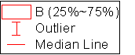
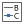
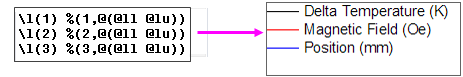
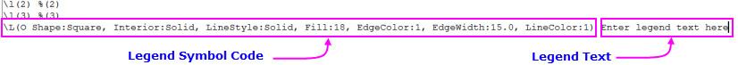
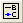

Origin unterstützt vier Legendenobjekte und zwei Skalenobjekte. Diese Seite behandelt hauptsächlich die Legendenobjekte. Informationen zu Skalenobjekte erhalten Sie unter Farbskalen und Blasenskalen.
| Die Datenzeichnungslegende | Die Legende der kategorialen Werte | Die Punkt-für-Punkt-Legende | Legende der Boxdiagrammkomponenten |
|---|---|---|---|
|
|
|
 |
Die vier Diagrammlegenden oben haben folgende Komponenten gemeinsam:
Die Diagrammlegende ist ein spezielles Textobjekt, das automatisch auf der Diagrammseite erstellt wird. Das Legendenobjekt erhält einen spezifischen Namen -- "Legende" -- und wird programmatisch mit Ihren Origin-Projektdaten mit Hilfe der LabTalk-Notation verknüpft. Diese Notation wird nicht angezeigt, es sei denn Sie bearbeiten das Legendenobjekt. Normalerweise wird das "übersetzte" Symbol bzw. der Legendentext angezeigt.
Dieses Bild für einen typischen Legendendialog 'Objekteigenschaften' zeigt die LabTalk-Notation in der Mitte des Dialogs und die "Übersetzung" von Legendensymbol und Legendentext -- was Sie tatsächlich auf der Diagrammseite sehen -- im unteren Bereich des Dialogs.
Im Allgemeinen ist die Verwendung der mit einer Zeichnung verbundenen Metadaten in Kombination mit Dialogeinstellungen vorzuziehen, um Legendensymbol und -text zu erstellen. Informationen dazu, wie Sie dies festlegen, finden Sie hier:
Sie sind jedoch nicht auf programmierte Legenden beschränkt. Zuweilen ist die manuelle Bearbeitung des Legendenobjekts der schnellste Weg, um eine Aufgabe zu erledigen. Seitdem die Legende ein Textobjekt ist, können Sie es mit Hilfe allgemeingültiger Methoden für alle Textobjekte bearbeiten:
|
Klicken Sie doppelt auf das Symbol der Diagrammlegende und der Dialog Details Zeichnung wird geöffnet. Drücken Sie Strg und klicken Sie doppelt auf den Text der Diagrammlegende und der Dialog Legende wird geöffnet. |
Es gibt Minisymbolleisten für die Anpassung von Legenden. Verfügbare Schaltflächen variieren nach Diagramm-/Legendentyp.
Sie können auch mit der rechten Maustaste auf die Legende klicken, um das Kontextmenü zu erweitern und die Legende benutzerdefiniert anzupassen:
| To Do | Mittels Minisymbolleiste | Mittels anderer Bedienelemente | ||
|---|---|---|---|---|
| Zum Löschen des gesamten Legendenobjekts: | Taste Entfernen oder Befehl Inhalt entfernen im Kontextmenü | |||
| Zum Hinzufügen von Hintergrund zum Legendenfeld: | Schaltfläche Füllfarbe |
|||
| Zum Zeigen oder Verbergen des Rahmens des Legendenfelds: | Schaltfläche Rahmen |
|||
| Zum Ändern der Dicke oder Farbe der Rahmenlinie: | Schaltfläche Linien-/Rahmenfarbe  auf der Symbolleiste Stil auf der Symbolleiste Stil |
|||
| Zum Ändern der Größe der Legende: | Markieren Sie das Legendenobjekt und ziehen Sie an einem der Auswahlelemente. | |||
| Zum Anordnen der Legendeneinträge: | Schaltfläche Horizontal anordnen |
|
||
| Um den Zwischenraum von Legendeneinträgen und Hintergrund anzupassen: | Zeigen Sie auf den äußeren Rand des Legendenobjekts und, wenn der Zeiger als "Hand" angezeigt wird, klicken Sie einmal, um die Bedienelemente anzuzeigen. Ziehen Sie an dem Bedienelement zum Hinzufügen bzw. Subtrahieren von Zwischenraum. | |||
| Zum Vergrößern der Breite des Legendensymbols: | Schaltfläche Größere Symbolbreite |
Legendensymbolbreite (% der Schrift) auf der Registerkarte Legenden/Titel im Dialog Details Zeichnung | ||
| Zum Ändern des Zeilenabstands zwischen Legendeneinträgen: | Liste Linienabstände (%) auf der Registerkarte Text im Dialog Textobjekt - Legende | |||
| Zum Anpassen der Symbolgröße | Schaltfläche Punktsymbol vergrößern |
Klicken Sie zur Registerkarte Symbole und legen Sie die Symbolgröße im Dialog Textobjekt - Legende fest.
|
||
| Zum Ändern der Linienbreite des Legendensymbols: | Schaltfläche Liniendicke vergrößern und Schaltfläche Liniendicke verkleinern | Klicken Sie auf die Registerkarte Symbole und legen Sie die Liniendicke im Dialog Textobjekt - Legende fest. | ||
| Zum Ändern des Formats des Legendentexts: | Schaltflächen Schriftart, Schriftgröße, Schrift vergrößern, Schrift verkleinern und Schriftfarbe |
Symbolleiste Format
|
||
| Damit die Legendentextfarbe der Legendensymbolfarbe entspricht: |
Schaltfläche Schriftfarbe |
|
||
| Zum Hinzufügen von Sonderzeichen zu der Legende (Symbole, griechische Zeichen etc.): |
Klicken Sie auf die Schaltfläche Mehr |
|
||
| Zum Neuordnen von Legendeneinträgen: | Schaltfläche Umkehren |
|
||
| Zum Aktualisieren des Legendenobjekts nach Hinzufügen oder Entfernen von Zeichnungen/speziellen Punkten: | Schaltfläche Legende rekonstruieren  |
|
||
| Zum Erzeugen einer einzelnen Legende für mehrere Layer: | Kontextmenü Legende: Legende aktualisieren Setzen Sie im Dialog legendupdate Umfang aktualisieren auf Gesamte Seite, den Aktualisierungsmodus auf Rekonstruieren und Legende auf Eine Legende für gesamte Seite. | |||
| Zum Zeigen oder Verbergen bestimmter Legendeneinträge: |
Klicken Sie auf die Schaltfläche Zeigen/Verbergen |
Legende: Legende nur für sichtbare Zeichnungen zeigen, Legende: Legende für angepasste Kurven verbergen oder Legende: Legende für Funktionsdiagramme verbergen im Kontextmenü | ||
| Zum Verbergen von Legendensymbolen: |
Klicken Sie auf die Schaltfläche Zeigen/Verbergen |
Kontextmenü Legende: Legendensymbol verbergen | ||
| Zum Zeigen der Kennzeichnung des aktiven Datensatzes: | Schaltfläche Aktiven Datensatz kennzeichnen |
|
||
| Zum Anhängen der Legendentexte an Zeichnungen: | Schaltfläche An Zeichnungen anhängen |
Kontextmenü Legende: An Zeichnungen anhängen
Hinweis:
|
||
| Um den Legendentext auf eine andere Variable der Zeichnung zu ändern (wie die Spaltenbeschriftungszeilen), | klicken Sie auf die Schaltfläche Übersetzungsmodus der Diagrammlegende , um | das Bedienelement Übersetzungsmodus von %(1),%(2) auf der Registerkarte Legenden/Titel im Dialog Details Zeichnung auszuwählen. | ||
| Um den Legendentext umzubrechen: | Schaltfläche Textumbruch |
Gehen Sie zur Registerkarte Rahmen im Dialog Textobjekt - Legende und aktivieren Sie Textumbruch, Höhe anpassen.
Wenn Sie Legendentext manuell bearbeiten und eine lange Zeichenkette umbrechen müssen, siehe die Escape-Sequenz \ww(literal text). Siehe auch die Verwendung von "%(CRLF)", um einen Zeilenumbruch hart zu kodieren (nächster Abschnitt). |
||
| Um die Blockhöhe/-breite des Legendensymbols zu ändern: |
Schaltflächen Musterblock |
Auswahllisten Blockbreite des Legendensymbols und Blockhöhe des Legendensymbols auf der Registerkarte Symbol im Dialog Textobjekt - Legende | ||
| Um "hantelförmige" Symbole in Linien- + Symbollegenden zu verwenden: | Auswahlliste Stil von Symbol + Linie auf der Registerkarte Symbol im Dialog Textobjekt - Legende | |||
| Um den Legendentext auszurichten: |
|
|||
| Um die Legende zu rekonstruieren, so dass nur noch ein Legendentyp gezeigt wird, und die Legende automatisch zu aktualisieren: | Klicken Sie mit der rechten Maustaste auf die Legende und wählen Sie Nur einen Legendentyp verwenden und automatisch aktualisieren. | |||
| Um die wiederholten Legendeneinträge zu entfernen, wenn Sie eine Spaltenbeschriftungszeile zum Steuern der Zeichnungsfarbe verwendet haben: | Schaltfläche Legende rekonstruieren | Klicken Sie mit der rechten Maustaste auf die Legende und wählen Sie Legende: Legende rekonstruieren. |

.
Die vier Typen von Legendenobjekten können sich alle zusammen in einem Diagramm befinden. Sie können beispielsweise mehrere Y-Datensätze haben und mit diesen ein Boxdiagramm zeichnen. Sie möchten jedoch sowohl die Datenzeichnungslegende als auch die Legende der Boxdiagrammkomponenten anzeigen.

, und die am besten geeignete Legende für Ihr Diagramm wird erzeugt.|
Themen, die in diesem Abschnitt behandelt werden: |